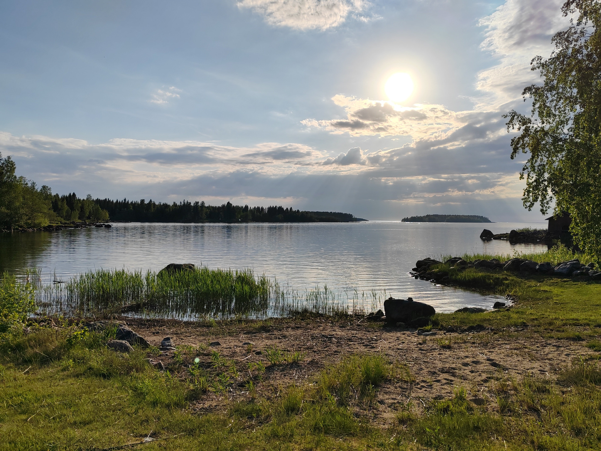
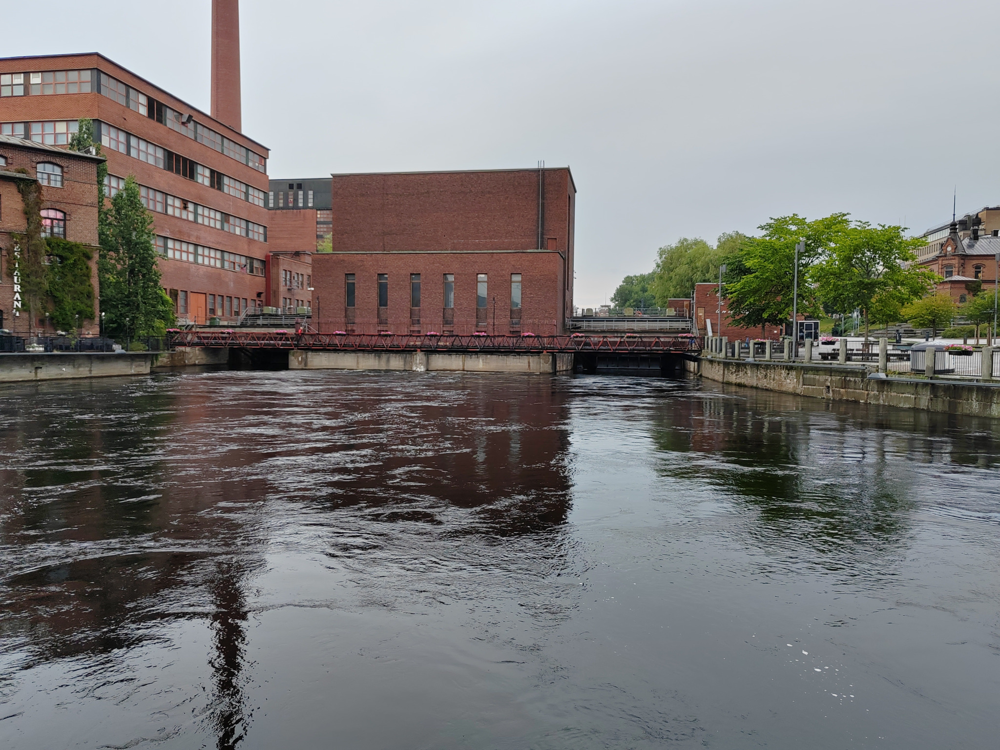
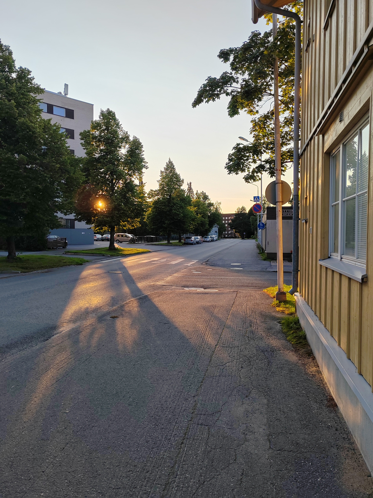

A Finnish coastline
A peaceful view of the sea, with the sun shining through the clouds.

A peaceful view of the sea, with the sun shining through the clouds.

Red brick buildings stand beside a river flowing through the city.

The warm evening light creates long shadows along a quiet street.
